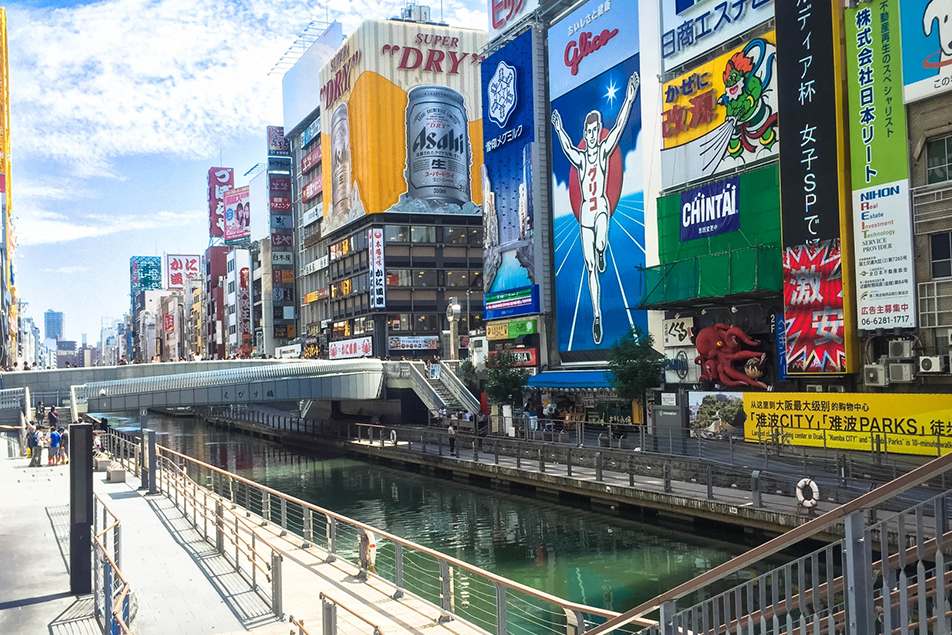
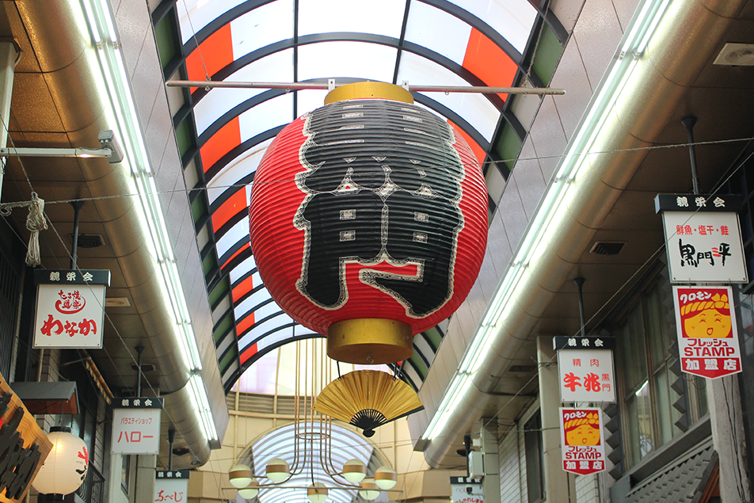
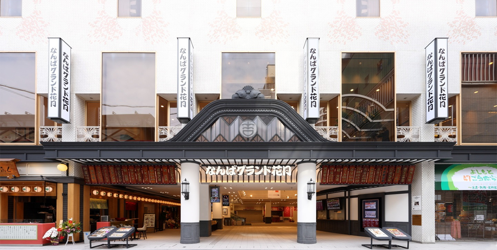

大阪に行ったら大阪城の観光ははずせません。くいだおれの町として有名な大阪は、たこ焼きやお好み焼き、串かつなど魅力的な食べ物がいっぱいですが、食べるだけじゃなくて観光もしたい、と思ったら、難波や大阪駅エリアからもアクセス便利な大阪城が断然おすすめです。

大阪城


道頓堀
道頓堀(どうとんぼり)は大阪府大阪市中央区に位置する繁華街で、人気の観光スポットです。かつて街の南側に芝居小屋が、北側に芝居を見に来た人々のための飲食店が集まっていました。そのため現在でも南側には娯楽施設が、北側には飲食店が数多く立ち並ぶ傾向にあります。
黒門市場
天下の台所」の拠点として古くから栄えるのが黒門市場。ここには150店以上の店舗が立ち並び、鮮魚から青果、肉、着物や雑貨まで質の高い“ホンマモン”の品物が手に入る。また、大阪商人に触れられる市場として国内だけではなく、海外にも口コミで広がっていき、いまでは、多くの外国人観光客が訪れる場としても注目されている。


なんばグランド花月
大阪は笑いの街、街を歩いている人の会話も、まるで漫才の用で、普段の生活の中に笑いの文化が息づいています。 大阪の笑いのメッカといえば、やっぱりなんばグランド花月です。 大阪難波にあるよしもとクリエイティブエージェンシー運営の劇場で、ココでは連日、笑いが届けられています。 大阪に行くならなんばグランド花月に行かないと!!